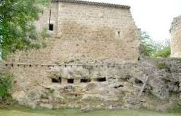
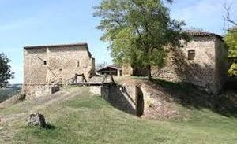
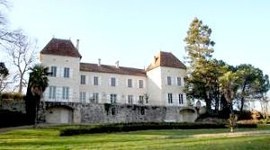
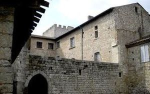
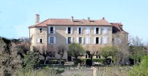
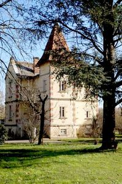
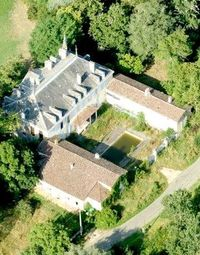
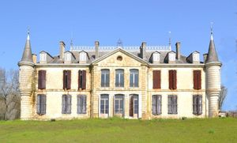

Recensement Jean-Claude Truffet
| Département | 32 — Gers |
| Canton | Prégnian |
| Commune | Prégnian |
| Type d'édifice | Château |
| Période d'origine | XIV-XVIII |








PREGNAN, les vestiges du château médiéval qui sont relativement bien conservés à l'ouest du castelnau. Le village actuel s'est formé en contrebas. TESTERE, était initialement inclus dans le Duché de Roquelaure, qui comprenait par ailleurs le château du Rieutort. En 1756, les terres du duché ainsi que quelques dépendances sont vendues à Victor de Riquetti, comte de Mirabeau, par l'une des deux héritières du duc de Roquelaure, Françoise, princesse de Léon et duchesse de Rohan. Ainsi, le 1er septembre 1761, Jean-François-Joseph de Filhol, capitaine de cavalerie au régiment de Noailles, inspecteur des haras de la généralité d'Auch depuis 1758, en fait l'acquisition . Plusieurs propriétaires se succèdent au cours du XIXe siècle. Jean Boutan, marié à l'une des nièces de Jean-François-Joseph de Filhol, hérite du domaine avant 1793 et le conserve une trentaine d'années. Vers 1825-1827, le domaine devient la propriété du marquis Edouard de Carcado-Molac capitaine de cavalerie, chevalier des ordres royaux et militaires. Il est ensuite vendu le 17 octobre 1850 à Jean-François Josserand et sa femme , avant d'être légué par la veuve Josserand à Jean-Baptiste Arnoux, son petit neveu alors mineur, vers 1880. L'héritier de Filhol ne semble pas avoir réalisé de travaux au château. En revanche, les propriétaires suivants, Carcado-Molac et Josserand, ont engagés d'importantes transformations qui lui ont donné sa physionomie actuelle.
Testère, le corps de logis principal a quant à lui subit de nombreux remaniements, plusieurs sont effectués adjonction des tourelles d'angle au sud et du portique au nord, modification des ouvertures de l'étage, réalisation de la haute toiture en ardoise, aménagements et décors intérieurs. C'est la famille Josserand qui est à l'initiative de la construction des tourelles et de la nouvelle toiture. Elle fait par ailleurs construire avant 1877, la chapelle dans l'aile orientale, par le peintre et sculpteur lectourois Prosper Lasseran. La vente du domaine à Angélique Lengard le 19 juillet 1897, vers 1921, la propriété est revendue à Léopold et Elisabeth Verguin avant d'être acquise le 22 novembre 1924 par plusieurs familles italiennes originaires de Ruda, en Italie. La propriété, y compris la métairie, est partagée l'année suivante en sept lots entre les familles Ulian, Urizzi, Tomazin et Férigini. Le château proprement dit est divisé en quatre lots répartis autour de la cour commune et une école est installée dans la chapelle, une cour est aménagée côté nord. Les familles occupent le domaine jusqu'en 1956. Le château de la Testère constitue un exemple remarquable de demeure aristocratique de la fin du XVIIIe siècle, complétée par une importante exploitation agricole édifiée dans le même temps. L'adjonction des tourelles d'angle et de la haute toiture en ardoise au milieu du XIXe siècle a néanmoins sensiblement modifié son architecture.
Victor de Riquetti, Comte de Mirabeau
"
Plusieurs châteaux à Prégnian dont celui de Testère